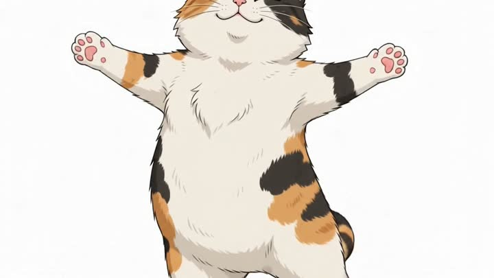
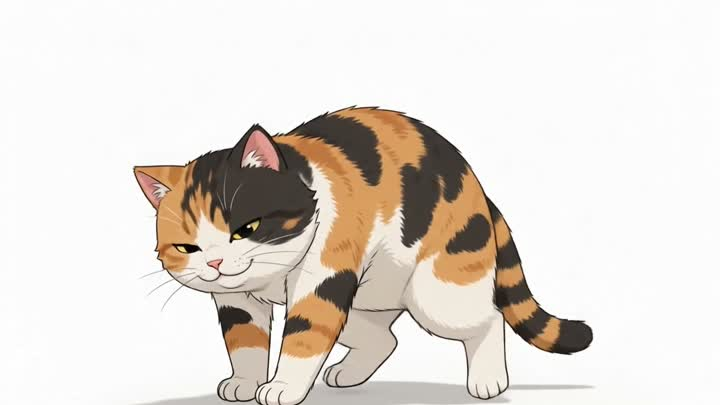
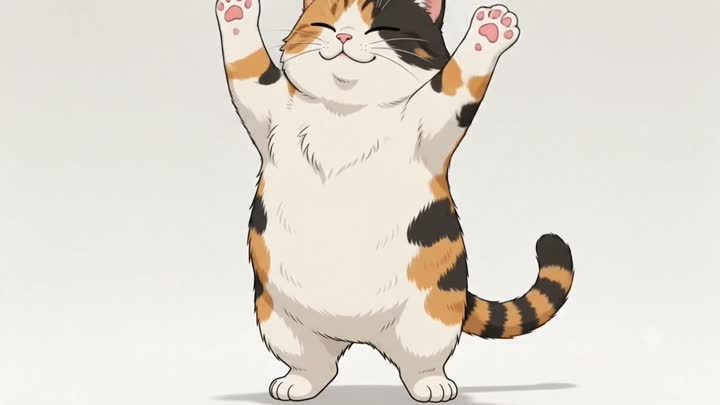
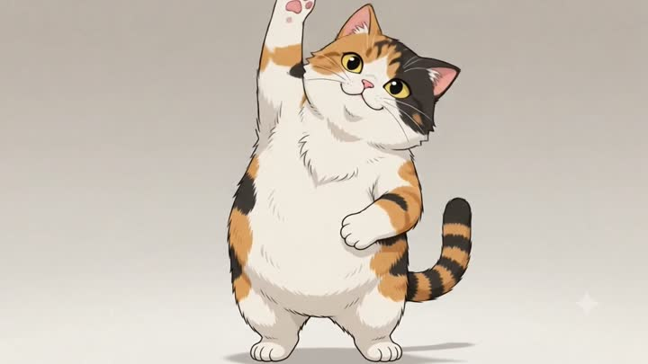
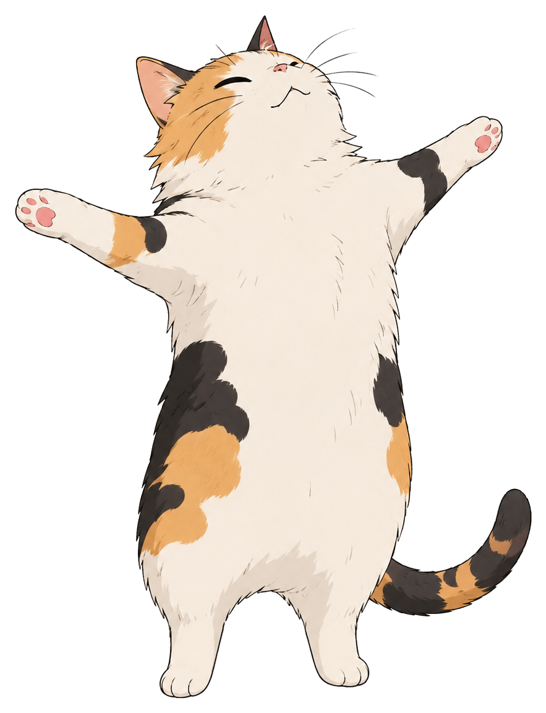

A cat that reminds
you to
stretch
.
It sits in your menu bar and pops up every two hours for a little stretch you actually do.
How the reminder works
- Every 2 hoursit quietly counts down
- A gentle pinga notification, no klaxon
- The cat pops upand starts stretching
- You follow alongabout thirty seconds
Quietly there.
Impossible to ignore.
A tap on the menu-bar cat opens the controls. When it is time, the whole routine slides in.
Four moves.
One very flexible cat.
No floppy stick figures. The whole routine is hand animated, and the cat does not skip leg day.




Small app. Big on not annoying you.
It does one thing, stays out of your way, and never asks for an account.
- Lives in your menu barA little cat face up top. No Dock clutter, no window to babysit.
- Set your own paceRemind me every 1, 2, or 3 hours. Pause it when you are deep in.
- Gentle, skippable nudgesSnooze ten minutes or mark it done. Your call, every time.
- Starts with your MacFlip on launch at login and forget it is even there.
- Notarized by AppleOpens clean, with no scary unidentified-developer warning.
- Free and open sourceMIT licensed. Read every line on GitHub.
Questions, answered.
The short version: it is free, private, and stays out of your way.
Is it really free?
Yes. Free and open source under the MIT license, no account, no upsell. The whole thing is about two megabytes.
The cat icon disappeared behind my MacBook notch. Help?
macOS hides menu-bar icons when the bar runs out of room next to the notch, and it offers no overflow menu. ⌘-drag the cat icon further left, move some system icons into Control Center, or quit a menu-bar app you are not using. Your stretch reminders keep firing even while the icon is hidden — and StretchCat will nudge you once if it notices it is buried.
Does it phone home or collect any data?
No. Everything runs locally on your Mac. No network calls, no analytics, no account, nothing to opt out of.
How do I change how often it nags me?
Click the cat in your menu bar and pick 1, 2, or 3 hours under “Remind me every.” You can pause reminders anytime, or hit “Stretch now” when you want one early.
Will it slow down or clutter my Mac?
It is a tiny menu-bar app with no Dock icon and no window to babysit. It sits quietly and counts down — that is the whole job.
Is it safe to install?
Yes — it is notarized by Apple, so it opens cleanly with no “unidentified developer” warning. You can also read every line of the source on GitHub.

Ready when you are.
Free, about two megabytes, and your spine will thank you.
Download for Macbrew install --cask vominhkhoii/stretch-cat/stretch-cat
{kind=link}
{kind=link}